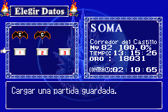
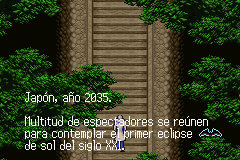
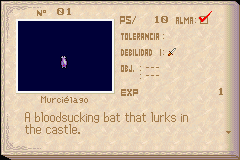
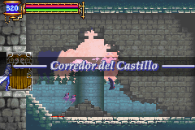

Mis proyectos
Colaboraciones
Contacto
Últimas noticias
Castlevania: Aria of Sorrow
Consola:  Gameboy Advance
Gameboy Advance
 
 
Las características que puedes disfrutar en este proyecto son:
- En la versión europea se ha sustituido el inglés por el español.
- Se han respetado los diálogos francés y alemán, i.e., puedes jugarlo sin problemas.
- Incluídos todos los caracteres propios del español.
- Traducción de todos los gráficos.
- Respetada la terminología de la saga, tanto de entregas anteriores como usar los mismos
nombres de entregas posteriores en NDS, etc.
- Algunos diálogos han sido reescritos y se han añadido cuadros de diálogo.
- ¡¡¡Super extra!!!: Los personajes han sido rediseñados a partir de los Artworks originales.
Enlace al parche:

Comentarios
La respuesta es muy sencilla: Debes usar la ROM con la numeración que digo y del grupo que la dumpeó que cito. Tan fácil como eso. Esa y sólo esa, da igual emulador o flashcart que te irá bien en ambos (más que nada porque nadie se me ha quejado en un año
Saludos
Suscripción de noticias RSS para comentarios de esta entrada.